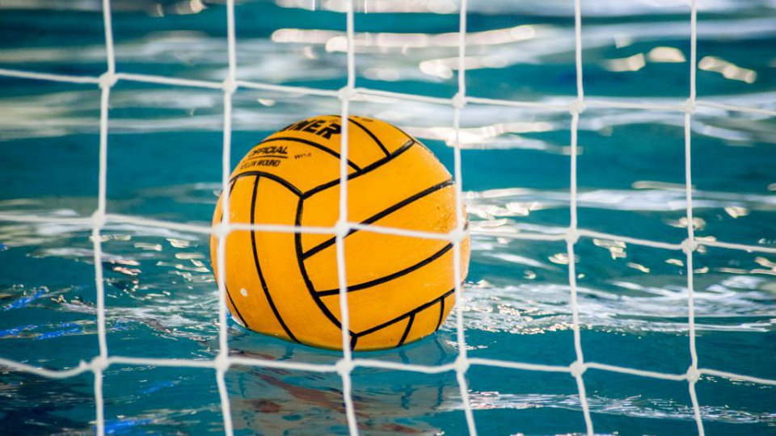

Előző éveimben rengeteg sportot kipróbáltam, a szárazfölditől a víziig, az egyénitől a csapatsportokig.
Volt úszás, cselgáncsozás, labdarúgás és vízilabda is.
Az úszást 6 évesen kezdtem, majd két évvel később rá is untam.
Ezt váltotta fel a cselgáncs, amelyet közel 4 évig űztem. Itt több jeles versenyeredményem is született, de abbamaradt a lelkesedésem.
A labdarúgás csak fél évig tetszett utána innen is továbbálltam.
Majd végül jött a vízilabda, melyet 8 évig versenyszerűen csináltam. 